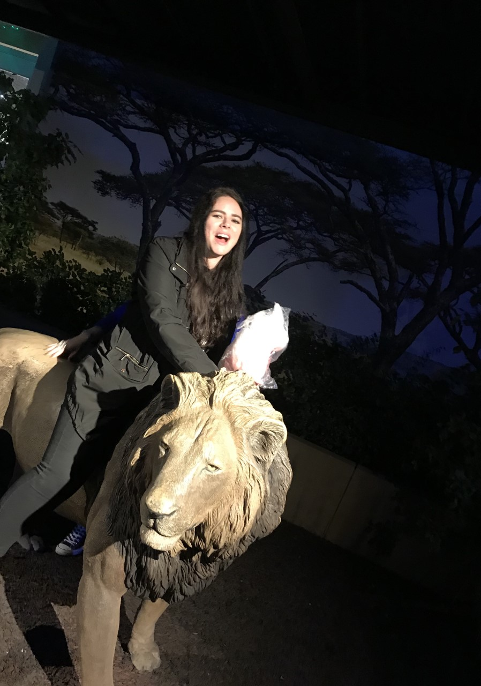
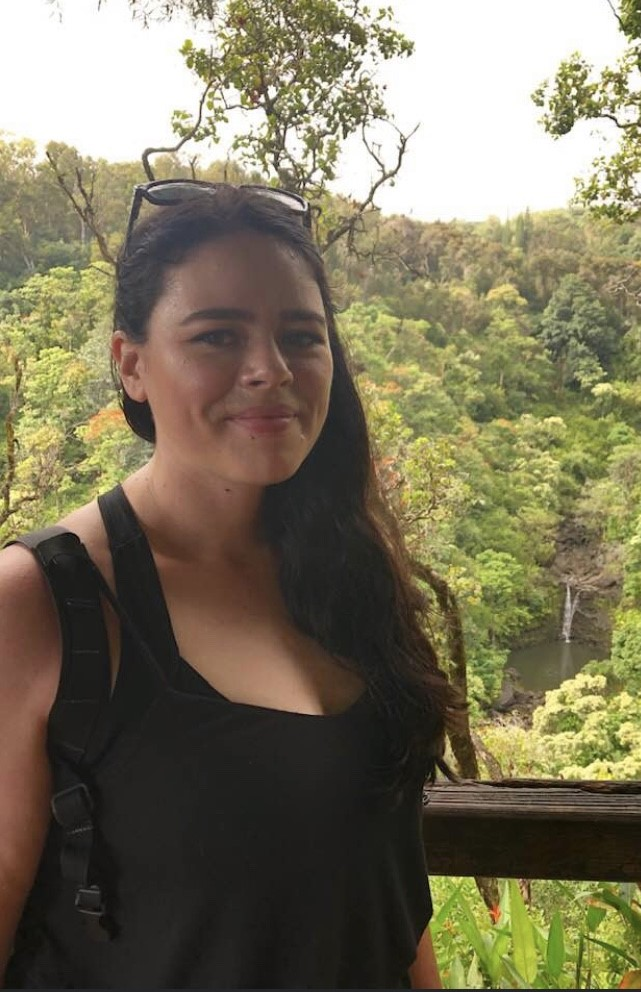

Jessica Sites's SCC WEB120 Portal
Welcome
 I am a full-time student at Seattle Central. I am pursuing an AAS in Computer Programming. I have previously worked in the medical field, and was at my last job, as a Cardiotech for 10 years. This is quite a change for me; learning a whole new language and getting used to a different culture. I am well versed in medical terminology, so this has been an interesting transition. I sometimes feel like I’ve been plucked out of one reality and dropped into another. But, despite all the changes, and necessary adjusting, I am truly excited to be learning something new, and am looking forward to seeing where this journey will take me. When I’m not at school, I enjoy spending time with friends, furry animals and communing with nature. I love a good documentary, have a passion for singing and music, my favorite television series is Black Mirror and I am obsessed with anything related to Psychology: true crime, research articles, books etc.